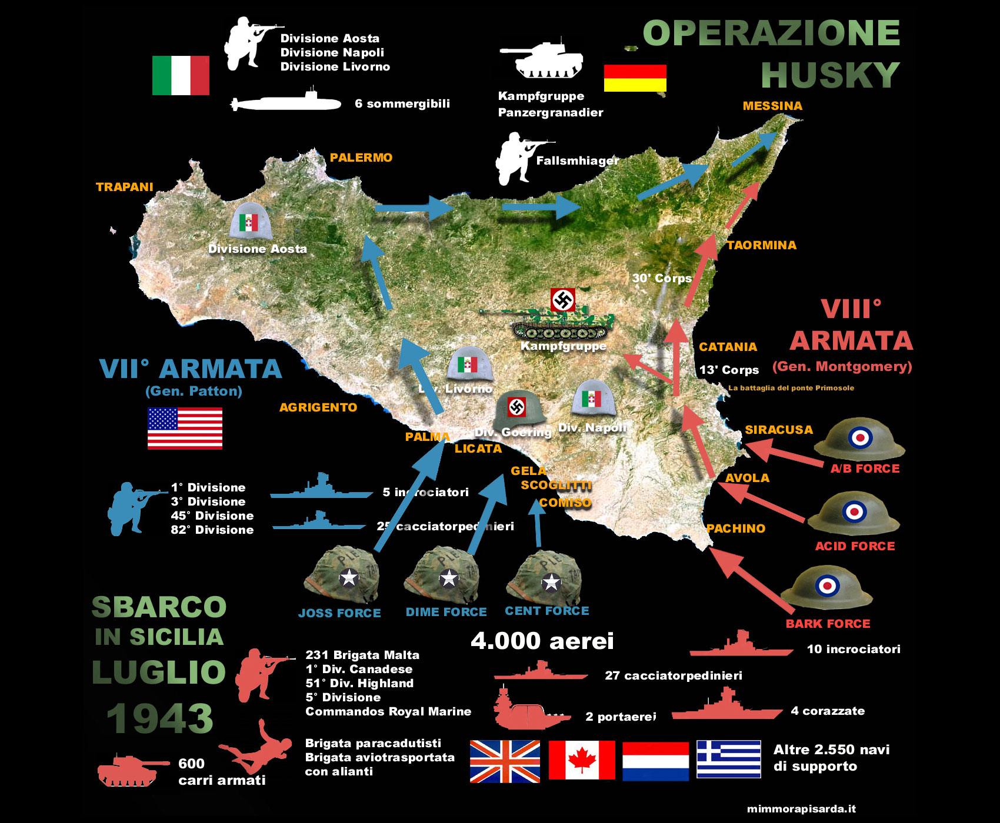
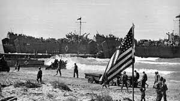

Sbarco in Sicilia: l’operazione Husky
 Lo sbarco in Sicilia degli alleati rappresentò una tappa fondamentale nella storia dell’Italia in guerra e contribuì in maniera decisiva a determinare lo svolgimento degli eventi successivi e le sorti dell’Italia. Il Paese, in guerra ormai dal 10 giugno 1940, versava in pessime condizioni: bombardamenti, miseria, fame, distruzione, oscuramenti, razionamenti del cibo e coprifuoco contrassegnavano la quotidianità degli italiani non impegnati sui fronti in Grecia, in Africa, nei Balcani.
Lo sbarco delle forze alleate in Sicilia fu reso possibile da una serie di eventi: - nel maggio del 1943, con la conquista della Tunisia, le forze alleate avevano ormai schiacciato le truppe tedesche e italiane in Africa; - gli alleati erano giunti nelle isole Pelagie e conquistato Pantelleria l’11 giugno del 1943. L’isola era stata in precedenza pesantemente bombardata.

Ebbe così inizio la campagna d’Italia, operazione bellica che diede inizio alla risalita della Penisola da parte delle truppe alleate.
Tra il 9 e il 10 luglio 1943 avvenne lo sbarco in Sicilia degli alleati. L’area di sbarco era compresa tra Licata e l’Isola della Maddalena. Circa 180mila uomini provenienti dagli eserciti inglese, statunitense e canadese, sbarcarono così sulle coste siciliane. Questa operazione fu straordinaria per l’ingente quantitativo di mezzi mobilitati (aerei e navi da guerra e da trasporto), superata solo dallo sbarco alleato in Normandia che sarebbe avvenuto circa un anno dopo, il 6 giugno 1944. Nell’arco di una decina di giorni, questi soldati riuscirono progressivamente e senza dover fronteggiare una forte e organizzata resistenza a conquistare l’isola. Solo le divisioni Assietta e Livorno riuscirono a distinguersi, ma anche i loro attacchi non riuscirono a bloccare l’avanzata alleata.
L’esercito italiano andò incontro allo sbandamento, per quanto sostenuto dalle forze tedesche. Il 22 luglio fu conquistata Palermo, medesima sorte toccò a Messina a metà agosto, città fondamentale per aprire da Sud la via verso il continente europeo.